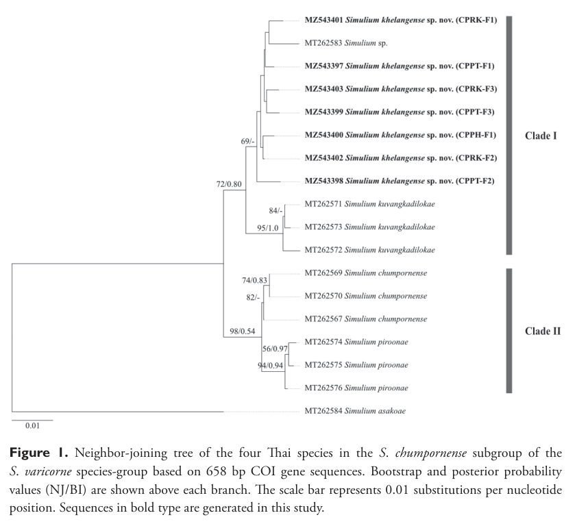
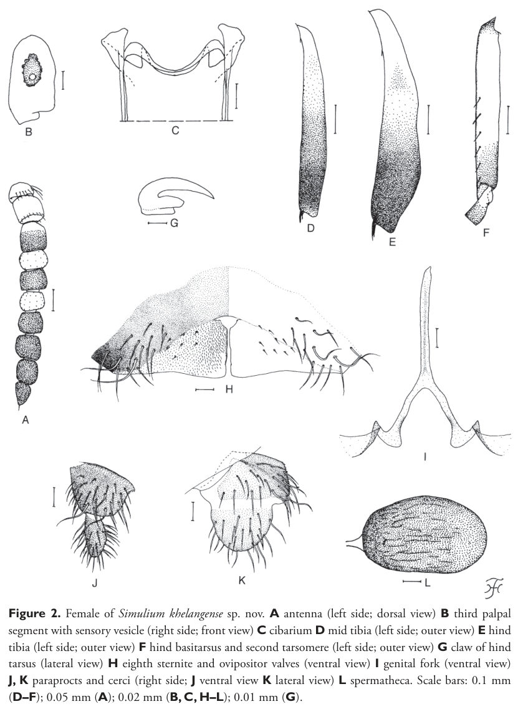

Species › Simulium › Gomphostilbia
Simulium khelangense
| Classification | Genus Simulium, subgenus Gomphostilbia |
|---|---|
| Status | valid |
| Distribution | Thailand (Lampang, Phitsanulok, Chiang Mai) (Srisuka et al. 2022) | Thailand; Laos (Aupalee et al. 2024, 2026) |
| Thailand | Type locality: Ban Lek, Fang District, Chiang Mai Province, 1,571 m, 20°04'36.3"N 99°10'53.0"E, 29-III-2018; also Pratoo Pha (Mueang, Lampang), Ban Romklao Botanic Garden (Chat Trakan, Phitsanulok), and Ban Pang Dang (Chiang Mai, as S. sp. in Aupalee et al. 2020) (Srisuka et al. 2022, pp. 2-5, 8) | Thailand (Aupalee et al. 2024, 2026) |
| Importance | Females captured by sweeping net while flying around a human attractant (large claw tooth 0.46-0.47x claw suggests ornithophily); an unknown filarial species was previously detected in this species (as S. sp.) in Chiang Mai (Aupalee et al. 2020, cited in Srisuka et al. 2022, pp. 2, 8). | Confirmed human blood feeder in Thailand by molecular blood meal analysis (Namtaku et al. 2025); identified as a natural/potential vector of avian blood protozoa Leucocytozoon spp. and Trypanosoma avium in Thailand and Filarioidea sp. in Thailand and Laos (Aupalee et al. 2024 p. 2, 2026 pp. 2, 12). |
| Diagnostic notes | S. varicorne species-group, S. chumpornense subgroup. Male, pupa and larva unknown in Srisuka et al. (2022). Female: body length 2.3-2.5 mm, wing 2.0 mm, antenna with 8 flagellomeres, pleural membrane bare, subcosta bare, hind tibia darkened on apical half with distinct medium-brown subbasal marking, mandible with 20-22 inner and 3-4 outer teeth (rarely weak). Distinguished from S. kuvangkadilokae by head:frons width ratio (4.21-4.66 vs 3.78-4.05), labrum:clypeus length (0.65-0.69 vs 0.57-0.59) and slender fore basitarsus (6.29-6.38 vs 5.56x greatest width); from S. piroonae by sensory vesicle:3rd palp segment (0.33-0.39 vs 0.25-0.30) and fore basitarsus (6.29-6.38 vs 5.54-5.68x width); from S. chumpornense, S. sumbaense, S. tomae and S. varicorne by hind tibia darkened on apical half (vs apical 1/3). COI distance 1.23-2.81% from S. kuvangkadilokae (Srisuka et al. 2022, pp. 4-8). |
| Sources | Srisuka et al. 2022, Aupalee et al. 2024, Aupalee et al. 2026 |
How it keys out
The chain of characters leading to this taxon in each key (a ready-made diagnosis).
Simulium varicorne species-group (females) (Srisuka et al. 2022) – couplet 9a
Figures



